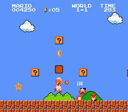

A Super Mario egy ikonikus videojáték-sorozat, amelyet a Nintendo fejlesztett. Mario, az olasz vízvezeték-szerelő, és testvére, Luigi, kalandok sorozatán keresztül próbálják megmenteni a békés Mushroom Kingdomot a gonosz Bowser-től. A játékok során a játékosok különböző szinteken navigálnak, gyűjtenek érméket, és különböző hatalmakat szereznek, miközben kihívásokkal és ellenfelekkel találkoznak. A sorozat népszerűsége világszerte töretlen, számos spin-off és filmes adaptáció is készült. Mario nemcsak a videojátékok világának egyik legismertebb karaktere, hanem a popkultúra szerves része is.

-

Super Mario Bros. (1985) - Super Mario Bros.: The Lost Levels (1986)
- Super Mario Bros. 2 (1988)
- Super Mario Bros. 3 (1988)
- Super Mario Land (1989)
- Super Mario World (1990)
- Super Mario Land 2: 6 Golden Coins (1992)
- New Super Mario Bros. (2006)
- New Super Mario Bros. Wii (2009)
- New Super Mario Bros. 2 (2012)
- New Super Mario Bros. U (2012)
- Super Mario Bros. Wonder (2023)